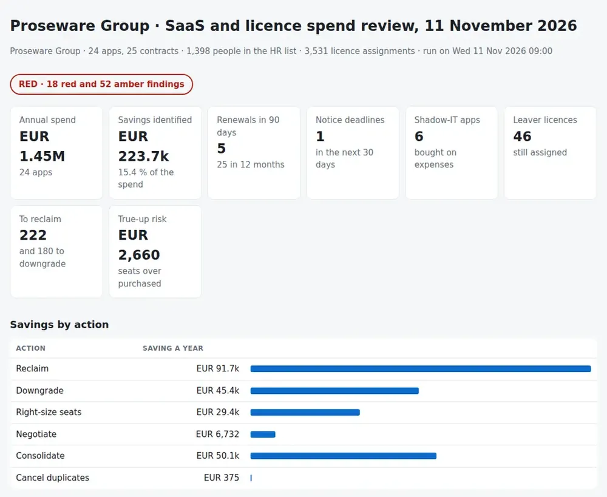

180 personas tienen Microsoft 365 E5 y no usan nada que no les dé ya E3, el plan más barato, y la diferencia de precio es el primer ahorro de la lista. En total, la revisión del gasto en SaaS y licencias que acompaña a este post identifica 223.700 euros de ahorro, un 15,4 % de una factura de 1,45 millones de euros al año. Es un proyecto de código abierto que se ejecuta con datos de ejemplo de una empresa de distribución inventada, con 1.370 empleados en cuatro países y 24 aplicaciones, revisada el 11 de noviembre con los problemas puestos a propósito.
El gasto en software y SaaS crece petición razonable a petición razonable, y las licencias casi nunca se recuperan. Los datos para ver a dónde va el dinero existen, en el registro, las consolas de administración, Entra ID, RR. HH. y la herramienta de gastos, pero pocas veces se leen juntos hasta que llega una renovación. La revisión los lee cada mes y une cada ahorro a una acción: recuperar, bajar de plan, ajustar asientos, negociar, consolidar o cancelar, con los usuarios que hay detrás, un responsable y una fecha.
46 licencias de gente que ya no está y un preaviso en nueve días
La demo encuentra 46 licencias que siguen asignadas a personas que se fueron hace meses, lo que es un coste y una puerta abierta. Un tercio de las licencias de Adobe Creative Cloud llevan tres meses sin abrirse. El contrato de firma electrónica se renueva solo con un tercio de los asientos sin asignar y nueve días para avisar, y el CRM vuelve con una subida del 9 % frente a un tope del 5 %.
Para la herramienta, la fecha que importa es la del preaviso, la de renovación menos el plazo de preaviso, no la renovación en sí. Un contrato con renovación automática cuya fecha ya ha pasado avanza un año cada vez, y la revisión mantiene un calendario de renovaciones de los próximos doce meses.
Dos herramientas de videollamada junto a Teams y cinco aplicaciones pagadas con tarjeta
La revisión también mira la cartera en conjunto. La empresa paga Zoom y Webex cuando todo el mundo tiene Teams, y Dropbox y Box al lado de OneDrive, así que aparecen como candidatas a consolidar. La pizarra colaborativa tiene más personas que asientos, y el ajuste, lo que el fabricante cobra por los usuarios de más, llegará a precio de tarifa. Nadie es responsable de un contrato que guarda datos confidenciales sin inicio de sesión único, y hay gente que paga Canva, Notion, ChatGPT Plus, Calendly y Grammarly con su tarjeta: es el shadow IT, el software que se compra fuera del registro.
El coste se reparte además por departamento y centro de coste, lo que se conoce como showback. Cada licencia por usuario se carga al departamento de la persona que la tiene, y los asientos vacíos y los contratos de tarifa plana se quedan en IT, así que las filas suman el total.
Cada euro se cuenta una sola vez
Para que finanzas pueda fiarse del total, los ahorros se aplican por aplicación en un orden fijo, recuperar, bajar de plan, ajustar asientos, negociar, cancelar duplicados y por último consolidar, con el coste de la aplicación como tope. Dejar una herramienta de videollamadas solo cuenta, por tanto, lo que queda de su coste después de quitar sus licencias sin uso y sus asientos vacíos. Los umbrales están en un fichero de configuración pactado con finanzas, y cada hallazgo tiene una gravedad, un responsable y una fecha.
Cómo usarlo con datos reales
Los datos de entrada son el registro de licencias y SaaS, las licencias asignadas con la última actividad de cada usuario, la lista de usuarios de RR. HH. o de Entra ID y los gastos con tarjeta. Un exportador de solo lectura lee de Microsoft Graph los SKU que ha comprado el tenant con sus asientos y los usuarios con sus licencias y su último inicio de sesión correcto, con un registro de aplicación y un secreto que se queda en memoria. El último inicio de sesión dice que la cuenta se usa, no que se use una aplicación concreta, así que la lista de licencias a recuperar pasa por el responsable de la aplicación antes de quitar nada.
La herramienta funciona con Python y solo la librería estándar, y genera report.html, con barras de uso por aplicación, el calendario de renovaciones y el reparto por departamento; review-pack.md, una página con las decisiones antes de las renovaciones para el responsable de IT y finanzas; y ficheros CSV con el uso, la lista de licencias a recuperar, el calendario, el reparto, los hallazgos y las acciones. Incluye 15 tests y un runbook para el ciclo mensual de recuperación, los pasos 120, 90 y 60 días antes de una renovación, cómo negociar con los datos de uso y cómo tratar el shadow IT sin bloquear a la gente.
De dónde sale
La hice a partir de la gestión de activos de software y el control de costes de licencias con Apptio y Flexera, de administrar Microsoft 365 como administrador global y gestionar las licencias de Office 365 y de Adobe, y de negociar contratos con proveedores. Detrás hay dos lecciones: el mismo euro no puede aparecer en dos ahorros, o finanzas deja de creerse el total; y el shadow IT suele ser una necesidad que IT no cubrió, así que hablar con quien lo paga funciona mejor que bloquear la tarjeta.
¿Quieres llevarlo a tu entorno o adaptarlo a tu caso? Escríbeme y lo vemos.
Tech Career Lab · newsletter
¿Te ha servido? Cada dos semanas envío una idea práctica para perfiles IT: LinkedIn, proyectos, networking y procesos de selección.
Apúntate y llévate las 33 ideas →